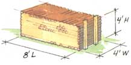

The Science Of Wood Stacking
From Shaker rounds to ricks, how to stack firewood for maximum seasoning.
By Ceylon Monroe
October/November 1994
In my part of upper New England, winters are long and cold; security is a big stack of well-seasoned firewood. The urge to "get the wood in" runs deep. It's an itch that kicks up when the leaves begin turning in mid-August and that won't stay scratched until the snow season's fuel supply is split, stacked, and ready to hand.
There is an art and a science to building a woodpile. Some say there's a spiritual side to it as well, but I can't help you much with that. You'd have to come to meeting already knowing that there's something more to a tree than wood, bark, and leaves as the Indians and the old-time French-Canadian axmen did, and the way a few modern woodsmen and women still do.
Firewood just dumped in a heap won't dry and it won't burn well. Rain will run down and soak into cut ends while ground moisture will migrate up and soak into spongy inner bark. But even the toughest ash and beech fire logs will start quickly and burn efficiently (with little creosote-making smoke) if seasoned in the woods for 6 months to a year, sectioned to stove length, the big logs half-split, and all of it piled in the woodshed or barn for some months more. The hardwood should be quartered; the pine should be split to kindling and piled again to surface-dry in a warm cellar for a few weeks or months and finally brought upstairs to heat and dry crisp for a day or two near the stove. Henry Thoreau neglected the work of piling and repiling when he wrote, "Wood warms you twice ...once when you cut it and again when you burn it." By my count it warms you six or seven times - most of that in building and tearing down woodpiles.
Stacked in the Woods
Since colonial days, wood cut from trees too small to saw into lumber has been bought, sold, and traded by the cord - 128 cu ft of 4-ft-long logs and air in a stack 8 ft long and 4 ft high. Loggers were paid by the cord as piled in the woods - each cord was anchored at one end against a standing tree with the other end ricked against a pair of stout poles sunk in the snow or soft ground. A crafty woodcutter would build in as much air as he could, padding his wages a bit and helping speed the seasoning process. Left in the woods through at least one season of dry winter air, the logs would lose their live wood moisture content in excess of ambient humidity (about 20%) through evaporation in warm weather and, more slowly, via sublimation after a frost.
Come the wood selling season next fall, big-wheeled log wagons pulled by ox teams would haul the 2-ton cords to wood yards in town. There, the 4-ft logs would be sectioned to stove length (a bit less than the width of a parlor stove's door or length of a range's firebox), or divided in the middle for 2-ft-log-burning stoves. And it would be stacked in 4 x 4 x 8 cords again for sale. A clever wood merchant would show the yard hands how to stack in as much air as possible and a clever buyer would insist on restacking his own way or would go elsewhere.
It works largely the same way today, except that much of the work is automated. High-powered skidders and logging trucks can harvest and transport whole trees to be seasoned and processed in the yard. Logs are aged whole and then sectioned to order with a big cordwood saw, split with a hydraulic ram, and moved by conveyer belt into trucks with one-, two-, or four-cord-sized beds that will dump the wood in your yard. It never sees a cord-sized pile. Modern wood merchants have been known to sell air, charging exorbitant prices for little ricks or full-cord prices for face cords that measure 8 ft long and 4 ft high but are only one stick deep. Some years ago, many states passed laws defining a cord as 128 cu ft and imposed fines on merchants selling air for the price of wood.
Wood is often sold wet and green - right off the stump - or aged for just a few months. While seasoned wood sells for $100 per cord, green may go for $80, so you can save money and make splitting easier by seasoning it yourself. (See Gail Damerow's instructions for telling aged from green wood .)
Stacking at Home
Whether bought or grown at home, wood should be stacked so it will continue drying. Give the wood as much sun as you do your garden. Wood stacked in the moist shade will never dry. To encourage air to move through channels in the stack, orient sticks so that the cut ends face the direction of prevailing wind or air movement. Local winds are variable, but in most of North America, weather systems move from west to east, changing all of the continent's air every three days. Lacking a steady prevailing wind, orient wood so that cut ends face west - into moving air.
In hilly terrain, the air will flow up and down the hills or along the valley floor as the sun warms it each day. If you are a hunter or naturalist, you know that deer bed down for the day on the ridges, then travel uphill at dawn so they are informed of danger ahead by scent carried on the cold and dense hilltop air falling into the warm valleys below. Then at dusk they come down to feed and water in the lowlands, facing into sun-warmed air rising up out of the valley. Try to orient the woodpile with cut ends facing the directions the deer move.
A woodpile is a public thing - as much of a "statement" as your garden or your mailbox or the vehicle you park out front. In my up-country Maine town, they say that a reliable, hardworking man will stack his wood square and straight, while a slacker stacks sloppily. If a pile weaves, wavers, or leans out of plumb, its builder is suspected of a need for eyeglasses, of tippling, or worse. Know those old wives whose tales are famous? Well, when their daughters reach courting age, they gauge the marital prospects of a man by the way he stacks wood. Weak and insecure men (too timid to get far) build a low stack arranged by log size - heavy logs on the bottom, little stuff on top. The socially or politically ambitious (they're all crooks) stack high and show-offish with big logs on top. The lazy (who never will amount to nothin') leave their wood in a heap or start a pile but never finish. And the sly and mercenary (watch yer virtue and yer pocketbook) stack ground-fall tree limbs and apple tree prunings in with the wood. If you want to keep your psyche to yourself, stack as the sticks come out of the pile.
Thoreau Was WrongÂ
Stacking wood can, in fact, warm you any number of times.
Preventing Bottom Rot
Build your woodpile on a base that will prevent bottom rot - evidenced by streaks of yellow mold or white fruiting bodies of fungus on the ground course of (ruined) wood. The best base I've seen was a ribbon of concrete paving blocks that a neighbor cast himself in a wood frame, then laid out along his fence line. It shed rain, kept ground water where it belonged, and gave the pile a level and solid base.
Keep horizontal courses as even and level as possible. In a really fine stack, facing tiers dip down in the middle in a shallow V shape so the faces lean on one another for mutual support. Small kids can run on a good woodpile without fear of knocking it down. Set logs one-over-two/two-over-one for best stability. Just as in a stone wall, stacking round logs one above the other creates long vertical seams called "run" that can fold at the crease and the pile will collapse. Wood cures fastest if stacked in one-stick-thick ricks, but you can't take it very high unless supported by a fence or barn wall. For a stable, self-supporting pile, build two or more tiers.
Build in as much air as you can, using irregularities and odd-shaped logs to create cross-stack channels for drying air. Always stack splits bark side up. Bark is designed to keep water out of the living tree and it will continue to shed moisture in the woodpile. To support ends of piles, you can use a standing tree, a fence post, or any other found support. At free ends, build stable, square log cribs by alternating courses of north-south logs with east-west. Fashion a water-shedding weather cap by building a peaked roof from overlapping splits or shingles, bought or riven on the spot with your ax from any good splitting logs. Birch, beech, or another smooth bark makes the best cap logs. Or cover the stack securely with a sheet of plastic or a tarp.
A top cover of black plastic will absorb heat and encourage evaporation in sunny climes. If you live in a humid or rainy climate, you can build a drying house of wood framing and a black plastic cover. The Oregon Cooperative Extension Service publishes plans for a great little solar dryer suitable to their cool and foggy weather. Write to Publication Orders, Agricultural Communications, Oregon State University, ADS 422, Corvallis, OR 97331-2119. They don't charge a thing.
Shape and size of the woodpile is your option. Straight ranks marching along fence lines are traditional. Some wood stackers like to build a series of cubes like little blockhouses; others raise whimsical shapes. But my favorite woodpile is the Shaker round. You start by making a flat circle of split logs arranged like spokes in a wheel and increase its size up and out, ending with a shoulder-high, cone-topped, disk-shaped woodpile. Covered with lapped birch splits or thick shingles riven from good splitting white oak or cedar logs, it will keep your wood dry and dazzle the neighbors. If you build with a section of holed plastic leach field drainpipe down the center and covered with a tin stovepipe cap painted black, air will be drawn up through the wood and out like a chimney. I know one wood heater who topped his stack's center pipe with a muffin fan on a long, weatherproof extension cord and got himself kiln-dried fire logs that lit with a match.
Stacking Inside
Don't store green or punky, old water-logged wood in the cellar of a modern, airtight, and well-insulated house. Up to a half-ton of water per cord will evaporate out to make your ceilings sprout mold and the wallpaper peel. Fresh red oak or cherry or black (peppermint) birch can reek. And legions of tiny, hard-shelled bark beetles can emerge from any wood to buzz around the cellar to mate and look for live trees to lay their eggs in.
But if the wood is left to season for a year in the woods, aromatic oils will dissipate; live tree wildlife will move out; and salamanders, centipedes, and other decaying-wood critters won't move in, so the wood will be easy to live with. Always stack it loosely and up off the floor on pallets, grids of poles, or old lumber. And don't stack tightly against cellar walls. Air should be able to circulate all around to enhance drying and will keep earwigs, pill bugs, and spiders from multiplying horribly in wet wood trash littering the floor.
Despite what you may read elsewhere, termites or carpenter ants that might come in with firewood won't chew your house up; the queens that lay eggs are protected in nests deep underground. Any individual bugs you see (even big black ants carrying larvae or eggs around) are harmless and won't live long. Powder-post beetles dig networks of tiny tunnels between bark and wood but won't bother finished lumber or debarked logs. But if bugs worry you, leave a light on in the cellar and, over a concrete floor under the pile (or on plastic sheeting over a dirt floor), apply a generous sprinkling of a chlorine-type household scouring powder. Freshen the powder around the border of the woodpile once in a while after the wood is stacked. Bugs will avoid the light and the smell of chlorine and will burrow deep into the stack, staying there till they join their maker. Don't use an insecticide-spray or powder. Some bug poisons develop virulently toxic (if short-lived) dioxin compounds when exposed to high firebox heat. You don't want the fragrant smoke that escapes from any wood fire to be more hazardous to your lungs' health than it is naturally.
Uncle Will's Woodpile
My farming Great Uncle Will made it a point of pride to have the wood in and stacked well before the first hard frost in October. There were several cords of 4-ft logs ranged along the roadside fence, stove-length, unsplit sections filling one front bay of the barn, half-splits piled along each way between barn and house to turn the path from milking parlor to kitchen into a seasonal tunnel. Quarter-splits and kindling stacked were on pallets to fill the north end of the cellar. All of it was stacked square and even. Where exposed to public view, only the most perfectly round, freshly cut ends looked out on the road, the vertical face of each stack as flat and plumb and slick as any newly plastered wall. Indeed, the house looked almost walled in by firewood. Neighbors driving by would nod approvingly. Leaf-peeping tourists would stop to snap pictures. And, with all the wood stacked and his itch scratched, Will would go around looking mighty self-satisfied for a day or two. He'd glance up from his chores from time to time and comment to anyone within hearing. including the dog, any cat that was handy, or an adoring young grandnephew who'd been allowed to help stack, "Yep. We'll stay warm this winter. Now the wood's in."
Benefit Mind, Body, and Spirit
Uncle Will spent most winter forenoons working up next year's wood. This meant hauling logs out of the snow-filled woods with Gawd 'n' Dammit, the team of geriatric Belgian draft horses that he treated like house pets but worked hard enough that all three of them stayed trim and hard-muscled into a robust old age... He was more than content to leave the family and kids snug in a house heated with fuel he'd felled, bucked, split, and stacked with his own hands.
Few of us moderns have so tangible a reason to feel good about ourselves. This is why I prescribe a bucksaw, a maul, and set of splitting wedges along with a really big woodpile as therapy for the twitches, gout, flabby midsection, jangled nerves, or deep-seated feelings of alienation, powerlessness, inadequacy, and most other ills of modern society. A heap of fresh cordwood begging to be sawed, split, and stacked beats Valium any day.
Two final cautions. Don't lay heavy logs in a stack lest you snag a glove on a splintery edge and crush a finger. Bring them in over their place and pull your hands away briskly so they drop a short distance and land with a satisfying klunk! Never swat at a bug you uncover in a woodpile. There is a very small chance that a brown recluse spider will take up housekeeping in your wood. These smallish and unremarkable-appearing, medium-brown, hairless spiders love woodpiles. They deliver a dangerous (even occasionally fatal) bite. Fortunately they live up to their name and will scuttle for cover if exposed to light. Let them go in peace.
|
The classic cord: 128 cubic feet of logs and air. |
 A Shaker round covered with thick shingles and surrounding a holed plastic leach field drainpipe. |
 Top: Don't stack too tightly. Allow drying air to get at the logs. Bottom: Stack with irregularities in the pile, avoiding long vertical seams that might collapse.(Illustration: Janna Brenning) |
|
|
|
|